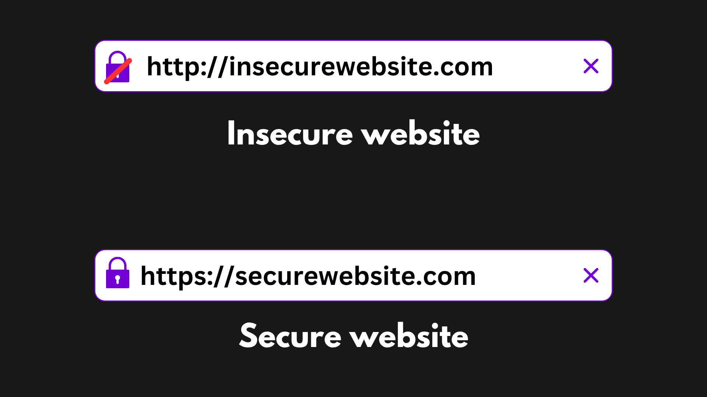

Web Security

We are on the web so much time. There are a lot of security threats on the web. We have to be careful while using WiFi surfing on the web. The websites we visit may not always be a good website. They may be of malicious purpose.
Have you ever noticed the padlock icon on your URL bar? If there is such an icon, then it means that the website you are using uses secure HTTPS protocol. If not, then it is using insecure HTTP. HTTP and HTTPS are the protocols used by the browser to communicate with the server on the internet. HTTP (HyperText Transfer Protocol) is not encrypted and is vulnerable to Man-in-the-Middle attacks. HTTPS is an encrypted protocol, which uses another protocol TLS (Transport Layer Security) or in older versions SSL (Secure Sockets Layer) for encryption.

SSL Stripping
SSL Stripping is the cyberattack that can happen due to insecure connection to the server. The user would think they have a secure connection to the server, but actually the connection is made to the hacker’s machine. For example, example.com could be the actual website but the hacker could trick the user to go to examp1e.com which is a malicious website. The user may not notice that it is not a legit website and redirect there.
Session Hijacking
Session is a concept that refers to the ability of the server to know who you are. Cookies help browsers know who you are without having to login with an account using a username and password. It's like stamping your hand so that when you visit that same website again, you can show the stamp and the website will recognize you. In every communication with the server there will be a cookie or session token or ID in the packet.
Session Hijacking is a cyberattack where the adversary steals the session token and communicates with the server pretending to be you.
Cross-Site Scripting (XSS)
XSS is a cyberattack where the attacker injects malicious scripts into the code of a trusted application or website. They can then steal sensitive information from the user. There are two types of XSS, reflected and stored attack.
Reflected XSS executes on the server. It is like phishing. The attacker sends a malicious link to the user and when the user clicks it, he is redirected to a malicious site. The attacker can then steal his information.
Stored XSS executed on the browser. The attacker permanently injects malicious code on the server. When the user opens the browser, the script gets executed and malware gets installed onto his computer.
Cross-Site Request Forgery (CSRF)
CSRF is an exploit where the attacker tricks the user into performing an action they didn’t intend to. For example, you login to a trusted website and then without closing the site or logging out from that site you somehow visit a malicious site. The malicious site will send a request to the trusted site. The trusted site would think that the request is coming from you so it will send your information.
SQL Injection
SQL (Standard Query Language) is a standard language used in databases. Suppose, a website has an input field for username and the website returns information of that user, then the SQL statement for this would look like this:
SELECT * FROM user
WHERE username = ‘{input_field}’
WHERE username = ‘{input_field}’ SQL Injection is the cyberattack where the hacker injects malicious SQL statements in the applications. So, in the input field, if the hacker inputs ‘admin’;DELETE FROM users;--’, then, the actual SQL statements will be modified as:
SELECT * FROM user
WHERE username = ‘ ‘admin’;DELETE FROM users;--’
This trick of escaping characters would delete the information of users from the database. Obviously this simple technique is not useful nowadays to perform SQL Injection on websites but there are advanced techniques that hackers can use to delete or modify databases.
Secure Web habits
- Only browse through websites using HTTPS protocol.
- Implement Web Application Firewalls.
- Download files from authenticated websites after properly inspecting the file and reviews.
- Update your browser whenever a new update is released.
- Use private browsing (incognito).